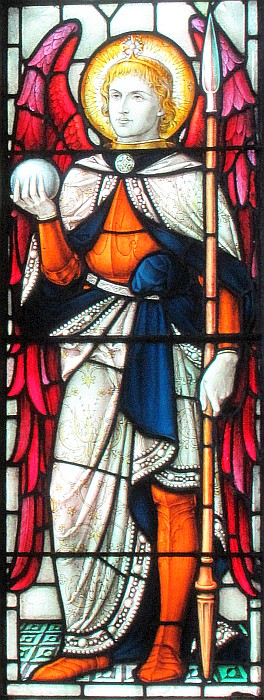

 La Ville d'Avranches est jeunm'lée auve la Pâraîsse dé Saint Hélyi, et si Saint Hélyi a l'Hèrmitage et garde la mémouaithe du saint tch'apportit la pathole dé Dgieuà not' Île, ch'est qu'Avranches a un saint étout - Saint Aubèrt.
Quand nou vîsite Avranches, i' vaut bein aller vîsiter l'églyise dé Saint Gèrvais. L'églyise a eune tou en style d'la R'naîssance ouaithe qu'ou n'fûsse bâtie qu'au dgiêx-neuvième siècl'ye. Lé d'dans a s'n întéthêt étout: dans l'Trésor d'l'églyise nou trouve d'tchi r'mèrquabl'ye. Y'a d's habits d'prêtre ouvrés en or et argent et des calices en or et argent étout - en êffet nou dithait qu'i' y'a d'l'or et d'l'argent à touos les bords. Y'a des vielles stchulptuthes dé saints étout à vaie et admither, mais chein qu'nou-s'app'lait la preunmié pièche d'la collection est la cranne dé Saint Aubèrt.
Y'a un ênorme èrlitchouaithe - explyitchi, eune câsse pouor exhiber l's os ou les r'liques des saints à seule fîn qu'les chein tch'y craient piêssent dithe lus priéthes dévant - en or et d'aut' méta, pliaichi sus eune manniéthe dé fielle et noué auve du fi d'or.
La cranne est fanmeuse ichîn pa'ce qué nou-s'y vait bein cliai un creux pèrchi dans la cranne. Né v'chîn l'histouaithe qué nou raconte:
S'lon la légende, eune niet l'Archange Miché appathut à Aubèrt, tch 'tait l'êvêque d'Avranches, et lî dit d'fonder un monastéthe sus un rotchi dans la baie tch'avait nom Mont Tombe. Quand i' s'rêvîlyit, Aubèrt criyait qué ché n'tait rein qu'un rêve, et i' n'fit rein pouor fonder l'monastéthe.
Pis, Miché lî r'appathut et lî r'quémandit d'fonder chu monastéthe sus l'rotchi. Aubèrt pensit qu'chu rotchi-là n'tait pon vraînment la bouonne pliaiche pouor la bâtithie d'un monastéthe - i' tait bein trop p'tit et bein difficile à vîsiter. Ch'est en tchi, l'Mont Tombe 'tait coumme not' Islet - à haute dg'ieau il est entouothé dg'ieau et la mé monte bein vite et y'a des mouoilliéthes dans les sablions à l'entou même au bas dg'ieau. Aubèrt don n'criyait pon qué ch'fûsse pôssibl'ye qu'Saint Miché voulait qu'i' faiche autcheune chose dé même sus l'rotchi.
Mais l'saint Archange lî r'vîsitit eune traîsième fais. I' tapit sus la tête à Aubèrt auve iun d'ses dés et însistit qu'l'êvêque prenge compte dé la c'mande dé bâti l'monastéthe s'lon la volonté du Bouan Dgieu. Lé dé brûlant d'l'ange avait tant d'forche qu'i' pèrchit la tête à Aubèrt et lî laîssit un creux dans sa cranne.
Aubèrt fondit l'monastéthe don, et viyant qu'i'n'y'avait pon grand run sus l'rotchi, les bâtisseurs avaû les siècl'yes fûtent oblyigis d'bâti bein haut, auve les bâtisses les iuns sus l's aut's - et nee v'chîn pouortchi qu'lé Mont Saint Miché est app'lé eune Mèrvelle Nouormande.
Y'a des troubl'ye-fêtes dé scientistes tchi dithent qu'la cranne est en véthité eune cranne préhistorique d'eune pèrsonne tch'avait 'té opéthé sus auve l'opéthâtion prînmitive qu'nou-s'appelle la “trépann'nie” - ch'est à dithe, nou soulait pèrchi un creux dans les crannes des pèrsonnes malades ou folles pouor laîssi hors les mauvais esprits.
Mauvais esprit ou archange? I' vaut vîsiter Avranches pouor décider!
Viyiz étout: